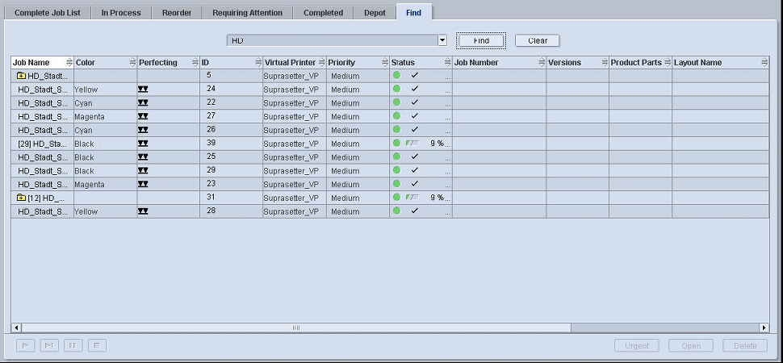

Вкладка «Найти» позволяет искать весь список заданий.

Функция Find позволяет быстро фильтровать отдельные задания из всего списка заданий. В качестве критериев поиска можно использовать различные функции заданий и вводить их в поле, например, название задания, дату ее создания, цвет и т.д.
В принципе, функция поиска выступает в качестве полнотекстового поиска по всем свойствам работы. По этой причине, как правило, достаточно ввести часть поискового запроса, чтобы отфильтровать все задания с помощью этой формулировки. Если вы не вводите достаточно информации в поисковый запрос, может быть отфильтровано слишком много заданий (например, в любом полнотекстовом поиске). Также можно ввести специальные символы, если они встречаются в столбцах списка заданий.
 Примечание: Вы не можете использовать для поиска такие переменные, как «*» или «?», т.е. wildcards.
Примечание: Вы не можете использовать для поиска такие переменные, как «*» или «?», т.е. wildcards.
Текстовое поле для поискового термина разработано как поле списка. Расширьте поле списка, чтобы отобразить введенные на сегодняшний день поисковые термины и снова выбрать один, если хотите.
Когда вы ввели свой поисковый запрос, нажмите
Входить
Ключ или щелкните «Найти».
Нажмите «Очистить», чтобы очистить список найденных заданий, если вы хотите найти новый термин.
Вы можете открыть или удалить задания, которые перечислены во вкладке «Найти», как и в полном списке заданий. Вы также можете пометить их как «срочные». Используйте кнопки ниже списка или команды в контекстно-чувствительном меню для этого.
Copyright © 2013 Heidelberger Druckmaschinen AG